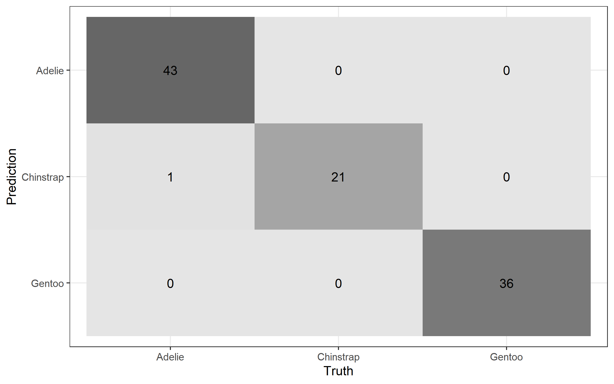
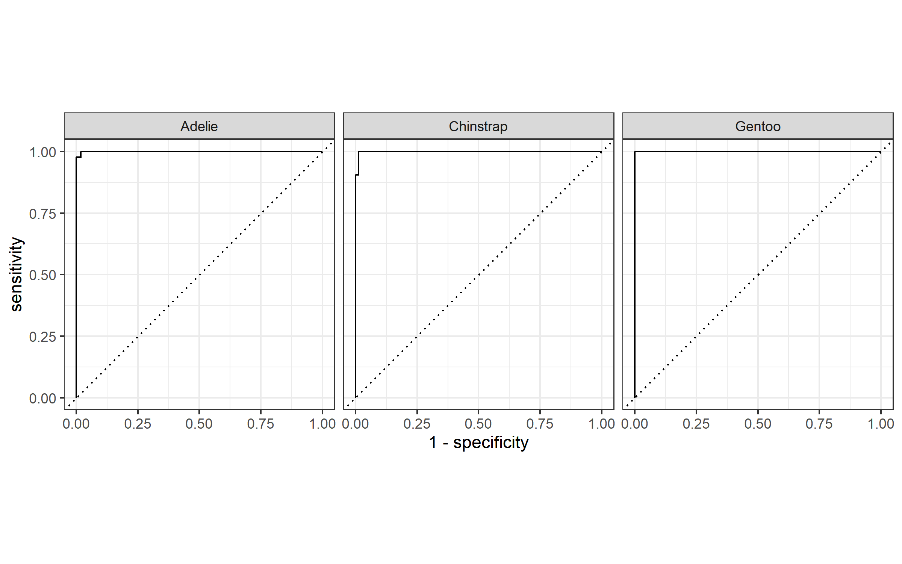
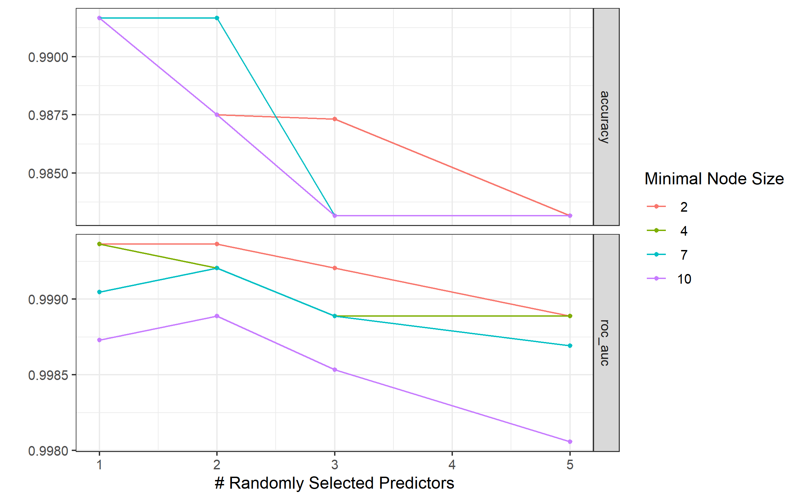
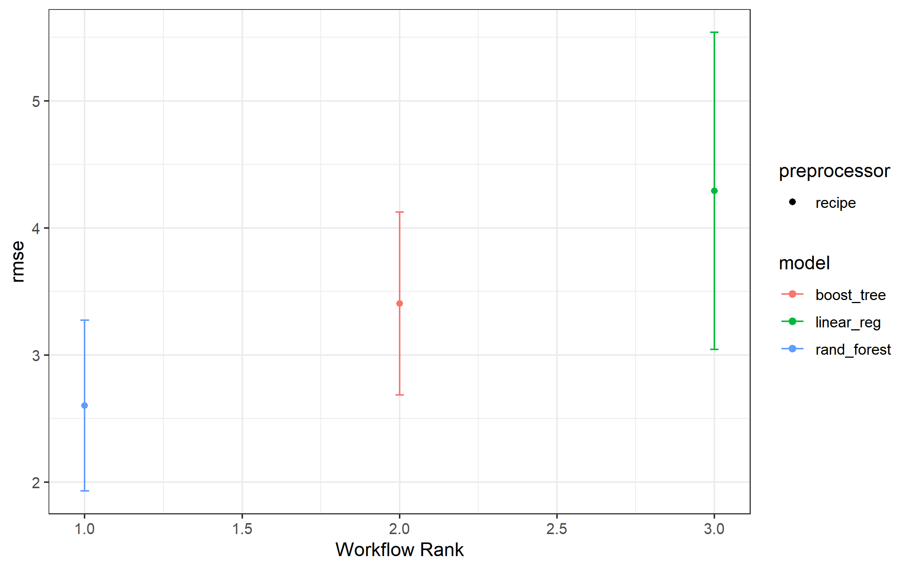
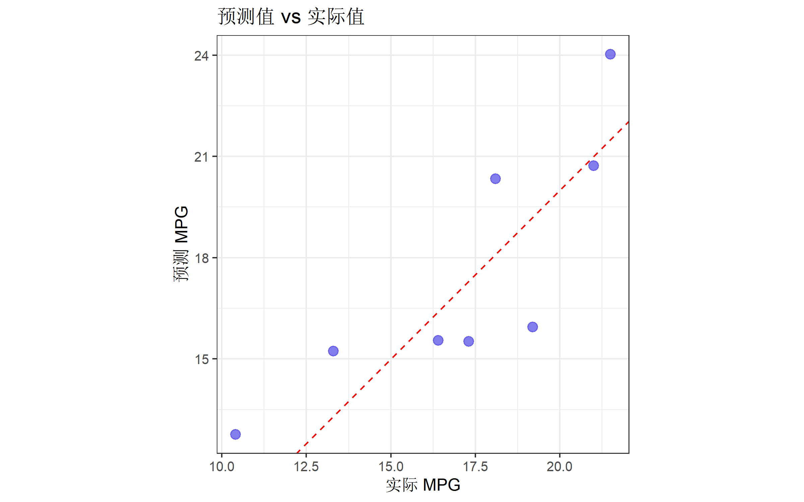

| 包名 | 功能 |
|---|---|
| rsample | 数据拆分与重采样 |
| recipes | 特征工程预处理 |
| parsnip | 统一模型接口 |
| workflows | 打包预处理+模型 |
| tune | 超参数调优 |
| yardstick | 模型评估指标 |
| broom | 整理模型输出 |
tidymodels 现代机器学习框架
R语言方法
机器学习
tidymodels
tidymodels 简介
tidymodels 是 R 语言中基于 tidyverse 设计理念的机器学习框架，提供了一套统一、现代化的建模工作流。它由多个协同工作的包组成，涵盖从数据预处理到模型评估的全流程。
核心优势
| 特点 | 说明 |
|---|---|
| tidyverse 风格 | 管道操作、一致的语法 |
| 模块化设计 | 每个包专注一个任务 |
| 工作流统一 | 预处理和建模封装在一起 |
| 可复现 | 避免数据泄露 |
| 灵活调参 | 强大的网格搜索和贝叶斯优化 |
tidymodels 生态系统
安装与加载
# 安装 tidymodels（包含所有核心包）
install.packages("tidymodels")
# 额外推荐
install.packages(c("ranger", "xgboost", "kknn"))library(tidymodels)
library(ggplot2)
# 设置主题
theme_set(theme_bw(base_size = 12))
# 设置随机种子
set.seed(42)机器学习工作流概览
tidymodels 的典型工作流程：
数据 → rsample（拆分）→ recipes（预处理）→ parsnip（模型）
↓
workflows（打包）→ tune（调参）→ yardstick（评估）第一部分：rsample 数据拆分
rsample 提供了多种数据拆分和重采样方法。
训练/测试集拆分
# 使用企鹅数据集
data("penguins", package = "palmerpenguins")
penguins <- na.omit(penguins)
# 70/30 拆分，分层抽样
penguin_split <- initial_split(penguins, prop = 0.7, strata = species)
penguin_split<Training/Testing/Total>
<232/101/333># 提取训练集和测试集
train_data <- training(penguin_split)
test_data <- testing(penguin_split)
cat("训练集:", nrow(train_data), "行\n")训练集: 232 行cat("测试集:", nrow(test_data), "行\n")测试集: 101 行交叉验证
# 5折交叉验证
cv_folds <- vfold_cv(train_data, v = 5, strata = species)
cv_folds# 5-fold cross-validation using stratification
# A tibble: 5 × 2
splits id
<list> <chr>
1 <split [184/48]> Fold1
2 <split [184/48]> Fold2
3 <split [186/46]> Fold3
4 <split [187/45]> Fold4
5 <split [187/45]> Fold5其他重采样方法
# Bootstrap
bootstraps(train_data, times = 25)
# 重复交叉验证
vfold_cv(train_data, v = 5, repeats = 3)
# 留一法
loo_cv(train_data)第二部分：recipes 特征工程
recipes 包提供了强大的数据预处理能力，所有步骤都可以复现到新数据上。
创建预处理配方
# 定义预处理步骤
penguin_recipe <- recipe(species ~ ., data = train_data) %>%
# 删除不需要的变量
step_rm(year) %>%
# 虚拟变量编码
step_dummy(all_nominal_predictors()) %>%
# 标准化数值变量
step_normalize(all_numeric_predictors()) %>%
# 移除零方差变量
step_zv(all_predictors())
penguin_recipe查看预处理效果
# 准备配方（fit to training data）
penguin_recipe_prep <- prep(penguin_recipe)
# 应用到数据
baked_train <- bake(penguin_recipe_prep, new_data = NULL)
head(baked_train)# A tibble: 6 × 8
bill_length_mm bill_depth_mm flipper_length_mm body_mass_g species
<dbl> <dbl> <dbl> <dbl> <fct>
1 -0.863 0.773 -1.40 -0.560 Adelie
2 -0.791 0.114 -1.05 -0.498 Adelie
3 -0.648 0.418 -0.413 -1.18 Adelie
4 -1.29 1.08 -0.554 -0.932 Adelie
5 -0.827 1.74 -0.765 -0.684 Adelie
6 -0.899 0.317 -1.40 -0.715 Adelie
# ℹ 3 more variables: island_Dream <dbl>, island_Torgersen <dbl>,
# sex_male <dbl>常用预处理步骤
| 函数 | 作用 |
|---|---|
step_normalize() |
标准化（均值0，标准差1） |
step_scale() |
仅缩放 |
step_center() |
仅中心化 |
step_dummy() |
哑变量编码 |
step_impute_median() |
中位数填充缺失值 |
step_impute_knn() |
KNN填充缺失值 |
step_pca() |
主成分分析降维 |
step_log() |
对数变换 |
step_interact() |
创建交互项 |
step_zv() |
移除零方差变量 |
step_corr() |
移除高相关变量 |
第三部分：parsnip 统一模型接口
parsnip 为不同机器学习算法提供统一的接口。
定义模型
# 随机森林分类模型
rf_spec <- rand_forest(
trees = 500,
mtry = tune(), # 待调参
min_n = tune() # 待调参
) %>%
set_engine("ranger") %>%
set_mode("classification")
rf_specRandom Forest Model Specification (classification)
Main Arguments:
mtry = tune()
trees = 500
min_n = tune()
Computational engine: ranger 常用模型类型
| 模型函数 | 算法 | 引擎 |
|---|---|---|
| logistic_reg() | 逻辑回归 | glm/glmnet |
| linear_reg() | 线性回归 | lm/glmnet |
| rand_forest() | 随机森林 | ranger/randomForest |
| boost_tree() | 梯度提升树 | xgboost/lightgbm |
| svm_rbf() | 支持向量机 | kernlab |
| nearest_neighbor() | K近邻 | kknn |
| decision_tree() | 决策树 | rpart |
| naive_Bayes() | 朴素贝叶斯 | naivebayes |
不同引擎示例
# logistic 回归（glm引擎）
log_spec <- logistic_reg() %>%
set_engine("glm") %>%
set_mode("classification")
# 带正则化的logistic回归（glmnet引擎）
log_reg_spec <- logistic_reg(penalty = 0.01, mixture = 1) %>%
set_engine("glmnet") %>%
set_mode("classification")
# XGBoost
xgb_spec <- boost_tree(
trees = 500,
tree_depth = 6,
learn_rate = 0.01
) %>%
set_engine("xgboost") %>%
set_mode("classification")第四部分：workflows 工作流
workflows 将预处理和模型打包在一起，确保一致性。
创建工作流
# 创建工作流
penguin_wf <- workflow() %>%
add_recipe(penguin_recipe) %>%
add_model(rf_spec)
penguin_wf══ Workflow ════════════════════════════════════════════════════════════════════
Preprocessor: Recipe
Model: rand_forest()
── Preprocessor ────────────────────────────────────────────────────────────────
4 Recipe Steps
• step_rm()
• step_dummy()
• step_normalize()
• step_zv()
── Model ───────────────────────────────────────────────────────────────────────
Random Forest Model Specification (classification)
Main Arguments:
mtry = tune()
trees = 500
min_n = tune()
Computational engine: ranger 训练工作流
# 先用固定参数训练一个简单模型
rf_simple <- rand_forest(trees = 100, mtry = 3, min_n = 5) %>%
set_engine("ranger") %>%
set_mode("classification")
simple_wf <- workflow() %>%
add_recipe(penguin_recipe) %>%
add_model(rf_simple)
# 训练
simple_fit <- fit(simple_wf, data = train_data)
simple_fit══ Workflow [trained] ══════════════════════════════════════════════════════════
Preprocessor: Recipe
Model: rand_forest()
── Preprocessor ────────────────────────────────────────────────────────────────
4 Recipe Steps
• step_rm()
• step_dummy()
• step_normalize()
• step_zv()
── Model ───────────────────────────────────────────────────────────────────────
Ranger result
Call:
ranger::ranger(x = maybe_data_frame(x), y = y, mtry = min_cols(~3, x), num.trees = ~100, min.node.size = min_rows(~5, x), num.threads = 1, verbose = FALSE, seed = sample.int(10^5, 1), probability = TRUE)
Type: Probability estimation
Number of trees: 100
Sample size: 232
Number of independent variables: 7
Mtry: 3
Target node size: 5
Variable importance mode: none
Splitrule: gini
OOB prediction error (Brier s.): 0.02059993 预测
# 在测试集上预测
predictions <- predict(simple_fit, new_data = test_data)
head(predictions)# A tibble: 6 × 1
.pred_class
<fct>
1 Adelie
2 Adelie
3 Adelie
4 Adelie
5 Adelie
6 Adelie # 预测概率
pred_prob <- predict(simple_fit, new_data = test_data, type = "prob")
head(pred_prob)# A tibble: 6 × 3
.pred_Adelie .pred_Chinstrap .pred_Gentoo
<dbl> <dbl> <dbl>
1 0.992 0 0.0085
2 1 0 0
3 1 0 0
4 0.968 0.0323 0
5 1 0 0
6 0.97 0.03 0 # 合并结果
results <- bind_cols(
test_data %>% select(species),
predictions,
pred_prob
)
head(results)# A tibble: 6 × 5
species .pred_class .pred_Adelie .pred_Chinstrap .pred_Gentoo
<fct> <fct> <dbl> <dbl> <dbl>
1 Adelie Adelie 0.992 0 0.0085
2 Adelie Adelie 1 0 0
3 Adelie Adelie 1 0 0
4 Adelie Adelie 0.968 0.0323 0
5 Adelie Adelie 1 0 0
6 Adelie Adelie 0.97 0.03 0 第五部分：yardstick 模型评估
yardstick 提供丰富的评估指标。
分类指标
# 准确率
accuracy(results, truth = species, estimate = .pred_class)# A tibble: 1 × 3
.metric .estimator .estimate
<chr> <chr> <dbl>
1 accuracy multiclass 0.990# 多个指标
class_metrics <- metric_set(accuracy, kap, mcc)
class_metrics(results, truth = species, estimate = .pred_class)# A tibble: 3 × 3
.metric .estimator .estimate
<chr> <chr> <dbl>
1 accuracy multiclass 0.990
2 kap multiclass 0.985
3 mcc multiclass 0.985混淆矩阵
# 混淆矩阵
conf_mat(results, truth = species, estimate = .pred_class) Truth
Prediction Adelie Chinstrap Gentoo
Adelie 43 0 0
Chinstrap 1 21 0
Gentoo 0 0 36# 可视化混淆矩阵
results %>%
conf_mat(truth = species, estimate = .pred_class) %>%
autoplot(type = "heatmap")
ROC曲线（多分类）
# ROC AUC
roc_auc(results, truth = species, .pred_Adelie:.pred_Gentoo)# A tibble: 1 × 3
.metric .estimator .estimate
<chr> <chr> <dbl>
1 roc_auc hand_till 0.999# ROC曲线
results %>%
roc_curve(truth = species, .pred_Adelie:.pred_Gentoo) %>%
autoplot()
常用评估指标
| 分类指标 | 函数 | 回归指标 | 函数 |
|---|---|---|---|
| 准确率 | accuracy() |
MSE | rmse() |
| Kappa | kap() |
MAE | mae() |
| AUC | roc_auc() |
R² | rsq() |
| 精确率 | precision() |
MAPE | mape() |
| 召回率 | recall() |
Huber | huber_loss() |
| F1 | f_meas() |
第六部分：tune 超参数调优
tune 包支持网格搜索、随机搜索和贝叶斯优化。
定义调参模型
# 带调参标记的模型
rf_tune_spec <- rand_forest(
trees = 500,
mtry = tune(),
min_n = tune()
) %>%
set_engine("ranger") %>%
set_mode("classification")
# 创建工作流
tune_wf <- workflow() %>%
add_recipe(penguin_recipe) %>%
add_model(rf_tune_spec)网格搜索
# 创建参数网格
rf_grid <- grid_regular(
mtry(range = c(1, 5)),
min_n(range = c(2, 10)),
levels = 4
)
rf_grid# A tibble: 16 × 2
mtry min_n
<int> <int>
1 1 2
2 2 2
3 3 2
4 5 2
5 1 4
6 2 4
7 3 4
8 5 4
9 1 7
10 2 7
11 3 7
12 5 7
13 1 10
14 2 10
15 3 10
16 5 10# 执行网格搜索
tune_results <- tune_grid(
tune_wf,
resamples = cv_folds,
grid = rf_grid,
metrics = metric_set(accuracy, roc_auc)
)
tune_results# Tuning results
# 5-fold cross-validation using stratification
# A tibble: 5 × 4
splits id .metrics .notes
<list> <chr> <list> <list>
1 <split [184/48]> Fold1 <tibble [32 × 6]> <tibble [0 × 4]>
2 <split [184/48]> Fold2 <tibble [32 × 6]> <tibble [0 × 4]>
3 <split [186/46]> Fold3 <tibble [32 × 6]> <tibble [0 × 4]>
4 <split [187/45]> Fold4 <tibble [32 × 6]> <tibble [0 × 4]>
5 <split [187/45]> Fold5 <tibble [32 × 6]> <tibble [0 × 4]>查看调参结果
# 查看所有结果
collect_metrics(tune_results)# A tibble: 32 × 8
mtry min_n .metric .estimator mean n std_err .config
<int> <int> <chr> <chr> <dbl> <int> <dbl> <chr>
1 1 2 accuracy multiclass 0.992 5 0.00833 pre0_mod01_post0
2 1 2 roc_auc hand_till 0.999 5 0.000635 pre0_mod01_post0
3 1 4 accuracy multiclass 0.992 5 0.00833 pre0_mod02_post0
4 1 4 roc_auc hand_till 0.999 5 0.000635 pre0_mod02_post0
5 1 7 accuracy multiclass 0.992 5 0.00833 pre0_mod03_post0
6 1 7 roc_auc hand_till 0.999 5 0.000952 pre0_mod03_post0
7 1 10 accuracy multiclass 0.992 5 0.00833 pre0_mod04_post0
8 1 10 roc_auc hand_till 0.999 5 0.00127 pre0_mod04_post0
9 2 2 accuracy multiclass 0.988 5 0.00833 pre0_mod05_post0
10 2 2 roc_auc hand_till 0.999 5 0.000635 pre0_mod05_post0
# ℹ 22 more rows# 最优参数
show_best(tune_results, metric = "accuracy", n = 5)# A tibble: 5 × 8
mtry min_n .metric .estimator mean n std_err .config
<int> <int> <chr> <chr> <dbl> <int> <dbl> <chr>
1 1 2 accuracy multiclass 0.992 5 0.00833 pre0_mod01_post0
2 1 4 accuracy multiclass 0.992 5 0.00833 pre0_mod02_post0
3 1 7 accuracy multiclass 0.992 5 0.00833 pre0_mod03_post0
4 1 10 accuracy multiclass 0.992 5 0.00833 pre0_mod04_post0
5 2 4 accuracy multiclass 0.992 5 0.00833 pre0_mod06_post0# 选择最佳参数
best_params <- select_best(tune_results, metric = "accuracy")
best_params# A tibble: 1 × 3
mtry min_n .config
<int> <int> <chr>
1 1 2 pre0_mod01_post0可视化调参过程
autoplot(tune_results)
使用最优参数训练最终模型
# 用最优参数更新工作流
final_wf <- finalize_workflow(tune_wf, best_params)
final_wf══ Workflow ════════════════════════════════════════════════════════════════════
Preprocessor: Recipe
Model: rand_forest()
── Preprocessor ────────────────────────────────────────────────────────────────
4 Recipe Steps
• step_rm()
• step_dummy()
• step_normalize()
• step_zv()
── Model ───────────────────────────────────────────────────────────────────────
Random Forest Model Specification (classification)
Main Arguments:
mtry = 1
trees = 500
min_n = 2
Computational engine: ranger # 在全部训练数据上拟合最终模型
final_fit <- fit(final_wf, data = train_data)
# 在测试集上评估
final_results <- predict(final_fit, new_data = test_data) %>%
bind_cols(test_data %>% select(species))
accuracy(final_results, truth = species, estimate = .pred_class)# A tibble: 1 × 3
.metric .estimator .estimate
<chr> <chr> <dbl>
1 accuracy multiclass 0.990last_fit: 一步到位
# last_fit 自动在训练集拟合，在测试集评估
final_results_full <- last_fit(final_wf, split = penguin_split)
# 收集测试集指标
collect_metrics(final_results_full)# A tibble: 3 × 4
.metric .estimator .estimate .config
<chr> <chr> <dbl> <chr>
1 accuracy multiclass 0.980 pre0_mod0_post0
2 roc_auc hand_till 1.000 pre0_mod0_post0
3 brier_class multiclass 0.0376 pre0_mod0_post0# 提取最终模型
final_model <- extract_workflow(final_results_full)第七部分：完整案例
案例：mtcars 回归预测
# 1. 数据准备
data(mtcars)
set.seed(123)
car_split <- initial_split(mtcars, prop = 0.75)
car_train <- training(car_split)
car_test <- testing(car_split)
car_folds <- vfold_cv(car_train, v = 5)
# 2. 预处理
car_recipe <- recipe(mpg ~ ., data = car_train) %>%
step_normalize(all_numeric_predictors()) %>%
step_zv(all_predictors())
# 3. 定义多个模型
lm_spec <- linear_reg() %>%
set_engine("lm")
rf_reg_spec <- rand_forest(trees = 500) %>%
set_engine("ranger") %>%
set_mode("regression")
xgb_reg_spec <- boost_tree(trees = 500, learn_rate = 0.05) %>%
set_engine("xgboost") %>%
set_mode("regression")
# 4. 创建工作流集
wf_set <- workflow_set(
preproc = list(recipe = car_recipe),
models = list(
lm = lm_spec,
rf = rf_reg_spec,
xgb = xgb_reg_spec
)
)
wf_set# A workflow set/tibble: 3 × 4
wflow_id info option result
<chr> <list> <list> <list>
1 recipe_lm <tibble [1 × 4]> <opts[0]> <list [0]>
2 recipe_rf <tibble [1 × 4]> <opts[0]> <list [0]>
3 recipe_xgb <tibble [1 × 4]> <opts[0]> <list [0]># 5. 批量训练评估
wf_results <- workflow_map(
wf_set,
resamples = car_folds,
metrics = metric_set(rmse, rsq, mae)
)
# 6. 比较结果
rank_results(wf_results, rank_metric = "rmse")# A tibble: 9 × 9
wflow_id .config .metric mean std_err n preprocessor model rank
<chr> <chr> <chr> <dbl> <dbl> <int> <chr> <chr> <int>
1 recipe_rf pre0_mod0_pos… mae 2.10 0.446 5 recipe rand… 1
2 recipe_rf pre0_mod0_pos… rmse 2.60 0.409 5 recipe rand… 1
3 recipe_rf pre0_mod0_pos… rsq 0.870 0.0448 5 recipe rand… 1
4 recipe_xgb pre0_mod0_pos… mae 2.90 0.383 5 recipe boos… 2
5 recipe_xgb pre0_mod0_pos… rmse 3.40 0.437 5 recipe boos… 2
6 recipe_xgb pre0_mod0_pos… rsq 0.736 0.101 5 recipe boos… 2
7 recipe_lm pre0_mod0_pos… mae 3.44 0.559 5 recipe line… 3
8 recipe_lm pre0_mod0_pos… rmse 4.29 0.759 5 recipe line… 3
9 recipe_lm pre0_mod0_pos… rsq 0.728 0.129 5 recipe line… 3# 7. 可视化比较
autoplot(wf_results, metric = "rmse")
# 8. 选择最佳模型进行最终训练
best_wf_id <- "recipe_rf" # 假设随机森林最优
best_wf <- extract_workflow(wf_results, id = best_wf_id)
# 最终拟合
final_car_fit <- fit(best_wf, data = car_train)
# 测试集评估
car_preds <- predict(final_car_fit, new_data = car_test) %>%
bind_cols(car_test %>% select(mpg))
metrics(car_preds, truth = mpg, estimate = .pred)# A tibble: 3 × 3
.metric .estimator .estimate
<chr> <chr> <dbl>
1 rmse standard 2.10
2 rsq standard 0.685
3 mae standard 1.90 # 预测 vs 实际
ggplot(car_preds, aes(x = mpg, y = .pred)) +
geom_point(color = "#4f46e5", size = 3, alpha = 0.7) +
geom_abline(slope = 1, intercept = 0, linetype = "dashed", color = "red") +
labs(
title = "预测值 vs 实际值",
x = "实际 MPG",
y = "预测 MPG"
) +
coord_equal()
常用代码速查
数据拆分
# 基础拆分
split <- initial_split(data, prop = 0.8, strata = outcome)
train <- training(split)
test <- testing(split)
# 交叉验证
folds <- vfold_cv(train, v = 10, strata = outcome)预处理配方
recipe(outcome ~ ., data = train) %>%
step_impute_median(all_numeric_predictors()) %>%
step_dummy(all_nominal_predictors()) %>%
step_normalize(all_numeric_predictors()) %>%
step_zv(all_predictors())模型定义
# 分类
rand_forest(trees = 500, mtry = tune()) %>%
set_engine("ranger") %>%
set_mode("classification")
# 回归
linear_reg(penalty = tune(), mixture = 1) %>%
set_engine("glmnet") %>%
set_mode("regression")工作流
workflow() %>%
add_recipe(recipe) %>%
add_model(model) %>%
fit(data = train)调参
tune_grid(workflow, resamples = folds, grid = 20) %>%
select_best(metric = "accuracy") %>%
finalize_workflow(workflow, .)小结
tidymodels 的核心价值：
- 一致性：所有模型使用相同的接口
- 可复现性：预处理步骤可准确应用到新数据
- 防止数据泄露：工作流确保测试数据隔离
- 灵活性：轻松切换算法和引擎
- 可扩展：丰富的社区包生态
与 mlr3 的区别：tidymodels 更符合 tidyverse 习惯，管道操作流畅；mlr3 使用 R6 面向对象，更灵活但学习曲线略陡。根据个人偏好选择即可。